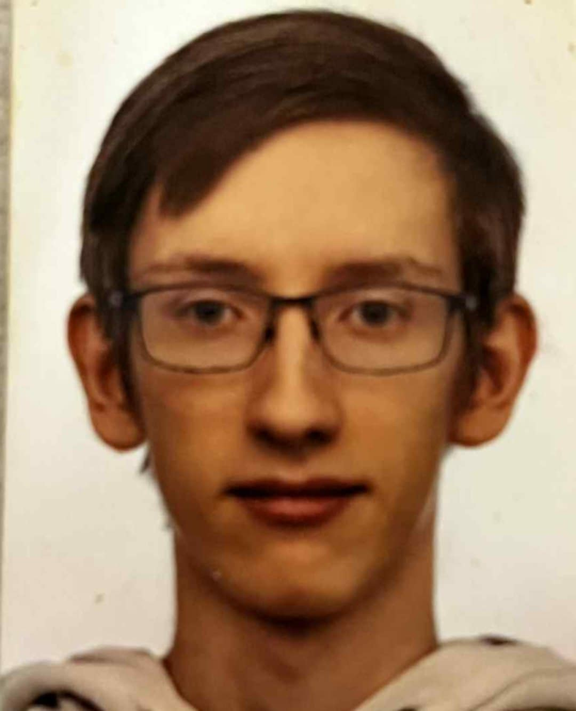

Sebastian
Zawsze chcielśmy wspólnie z Kubą stworzyć grę gdy nauczymy się programować. Najbardziej żałuję tego jak mało czasu razem spędziliśmy ostatnimi latami. Niech spoczywa w pokoju.
Ku pamięci przyjaciela

Zawsze chcielśmy wspólnie z Kubą stworzyć grę gdy nauczymy się programować. Najbardziej żałuję tego jak mało czasu razem spędziliśmy ostatnimi latami. Niech spoczywa w pokoju.
Choć Kubę znałem, krótko to czułem to mój drugi brat. Można było pogadać o wszystkim, pośmiać się z głupot, patrzeć na inne dziewczyny i marzyć o przyszłości. Szkoda że nie mogę wiecej z nim wypić piwa pod mostem. Spoczywaj w pokoju Kubuś.
pamiętam ten daleki 2023 i to jak bardzo byłam zakochana w tobie, nigdy nie odważyłam się cię przytulić, nigdy nie odważyłam się ci powiedzieć o swoich uczuciach, ale byłeś zawsze największym moim wsparciem, mam ogromną nadzieję że tam jest ci o wiele lepiej niż tu, że patrzysz na nas z góry i jesteś dumny że wszyscy jako tako dajemy sobie radę ze stratą ciebie.Spoczywaj w pokoju Kubuś
Kiedy w 2024 roku poznałem Kubę, nie przypuszczałem, że w tak krótkim czasie ktoś będzie w stanie zmienić moje podejście do życia. Pokazał mi, że relacje z innymi mogą być pełne wzajemnego zainteresowania. Nasze rozmowy i wspólne wyjścia, nawet te najkrótsze, sprawiały że każdy dzień stawał się lepszy. Potrafiliśmy się po prostu przejść po mieście i rozmawiać na spontanie o wszystkim i o niczym. Dzięki niemu zrozumiałem, że można znaleźć wspólny język z drugim człowiekiem nawet jeśli przez długi czas myślało się że to nierealne. Do każdej wspólnie spędzonej razem chwili wracam z ogromnym sentymentem, szczególnie teraz, w rocznice większości wydarzeń. Choć fizycznie Cię z nami nie ma, to wiem że to co wniosłeś do naszego życia pozostanie z nami na zawsze.